Седона — небольшой городок в Аризоне, заслуживающий большего!
Рассмотрим 5 причин, по которым Седона круче, чем гранд каньон!Список преимуществ Седоны
Настоящий городок
Седона не аттракцион для туристов, там течет своя жизнь
Жилье
Рекомендуем пожить в настоящем мотеле, все как в кино!
Сувениры
Не только китайского,
но и местного производства!
Еда
Всегда заказывайте фирменный бургер, Вы не разочаруетесь!
Там есть Мост Дьявола
Да, по нему можно пройти!
Если вы осмелитесь, конечно
Небольшая площадь
Все интересные места находятся очень близко
Красивая дорога
Ехать в Седону из Лас‑Вегаса совсем не скучно!
Мало туристов
Большинство едет в Гранд Каньон и толпится там
Поиск гостиницы
Заинтересовались?Укажите предполагаемые даты поездки,
и мы покажем вам лучшие предложения гостиниц в Седоне